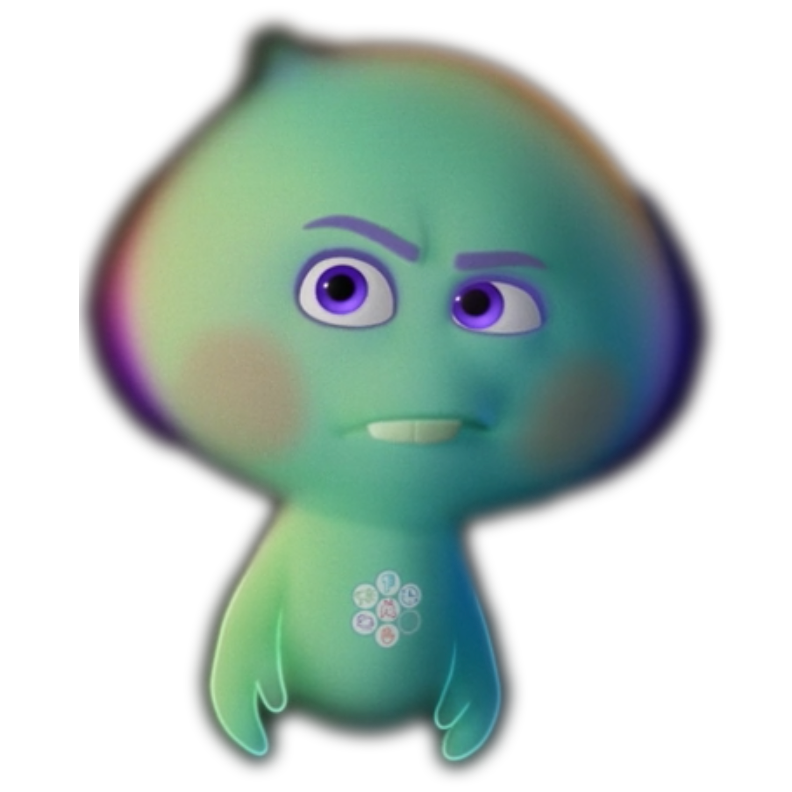
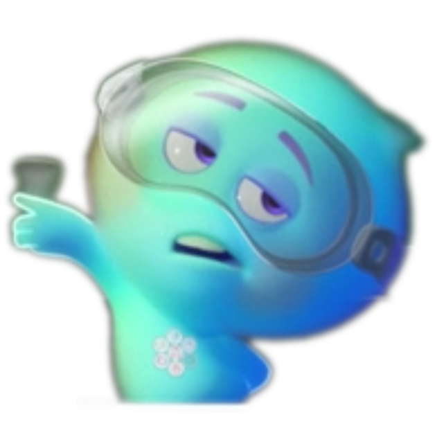
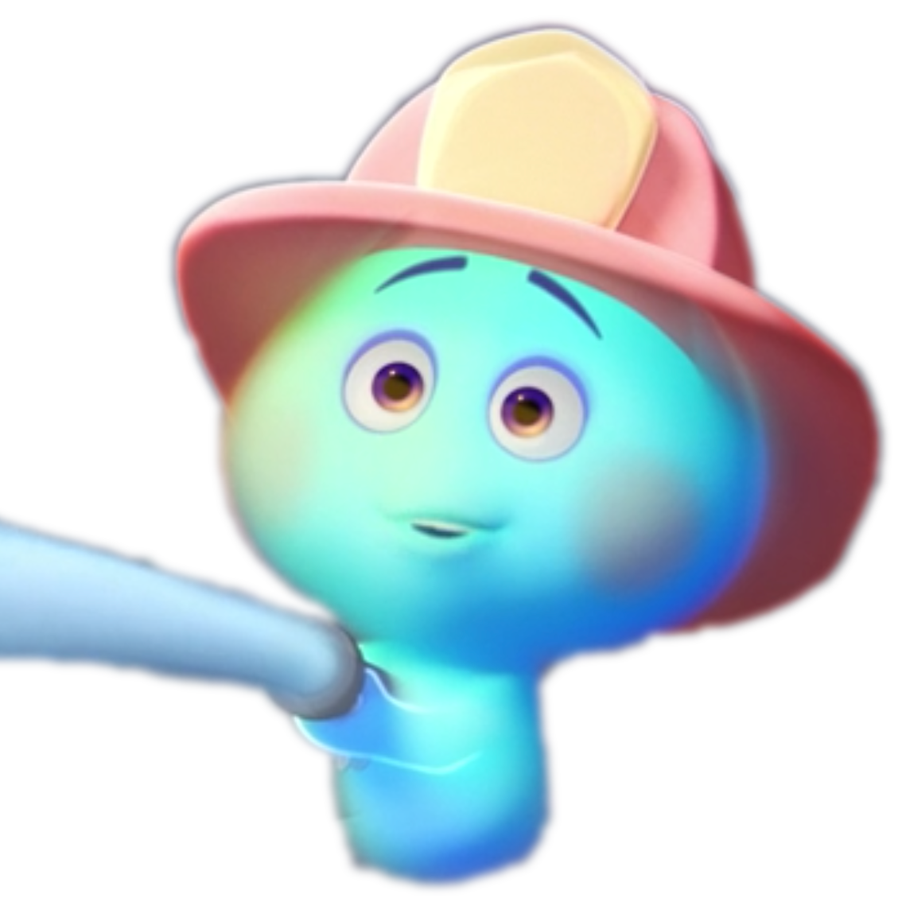
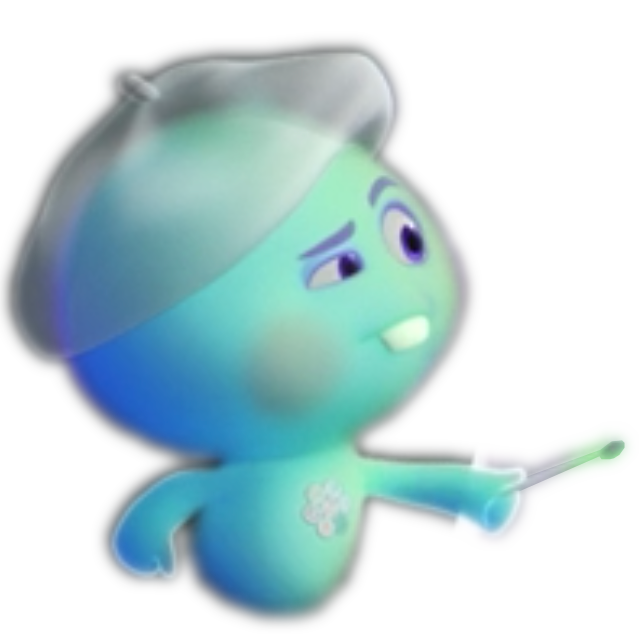
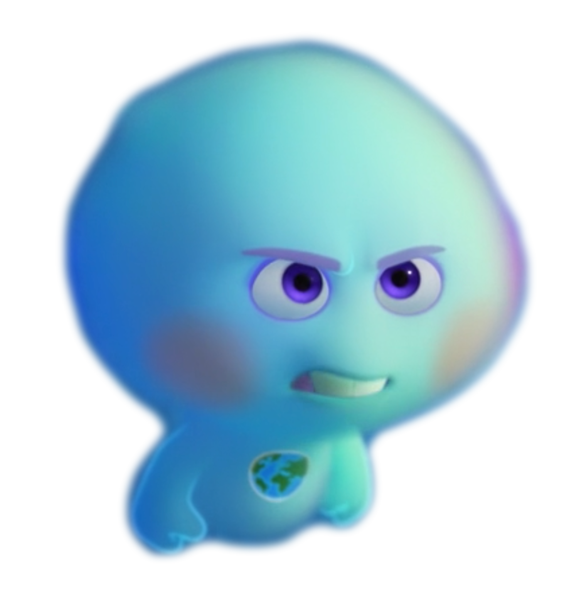

22
22 is a stubborn soul existing in the Great Before, the place where souls prepare for life on Earth.
Unlike other souls, 22 isn't thrilled about going to Earth and can't seem to find her spark.